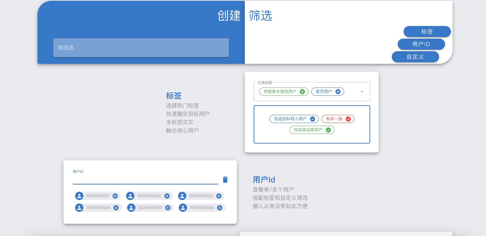
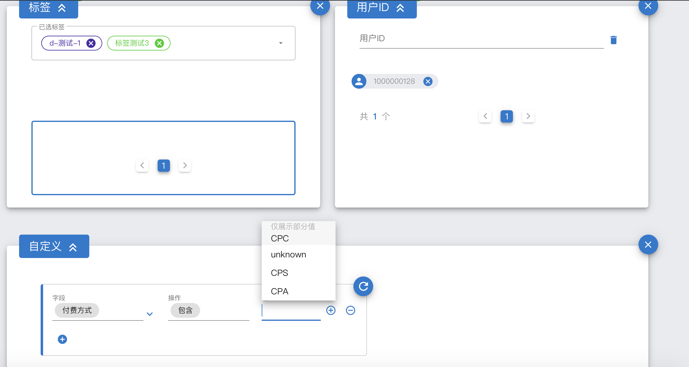
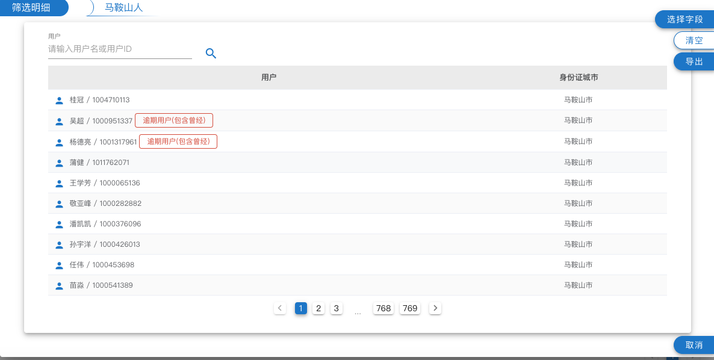
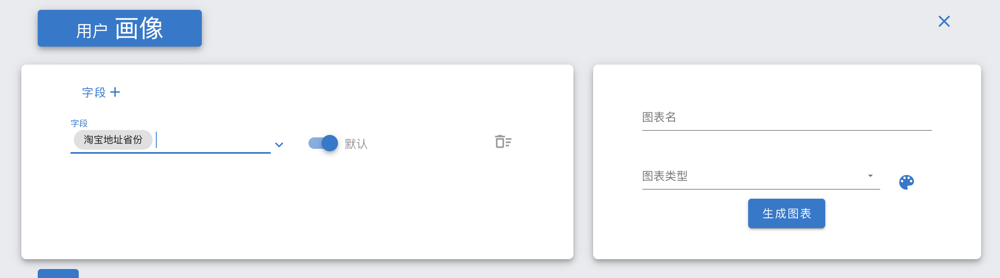
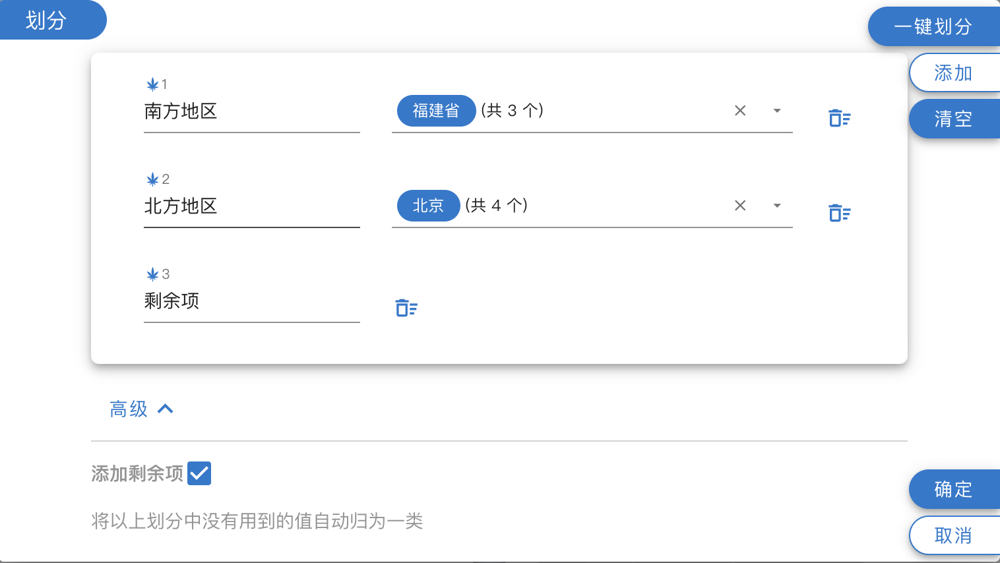
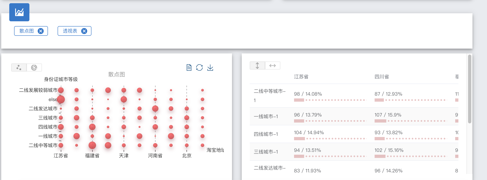

筛选¶
介绍¶
筛选是oak核心功能，支持三种方式的条件输入：标签、用户id、自定义
标签：
标签是各位在Oak里通过前期探索而沉淀下的条件集合，如“淘宝高消费人群”，添加标签可以极大的加速整个筛选过程，也可以直观的了解用户的各维度数据。
用户id：
查看某一个/多个用户的数据时使用，例如可以查看某一批用户的标签命中情况或条件满足情况。
自定义：
支持任意维度的条件组合。
添加筛选¶
可以同时使用标签、用户id、自定义三种方式中的多种或一种 
标签：
选择相应的标签，输入框支持搜索，点击标签会显示该标签的条件。
用户id：
多个id时，从任意地方复制（navicat、excel、网页等），在输入框里粘贴即可。
自定义：
自定义有三元素：字段、操作、值。
需要注意的是在输入值的时候，下拉列表里只是提示，并不代表该字段全部值

保存完筛选后，点击操作中计算按钮开始计算。
筛选应用¶
计算成功的筛选，点击结果，主要有以下应用：
明细的查看与输出：
点击明细，可以查看本次筛选命中的用户以及详细信息，点击字段按钮可以添加想要查看的字段，支持API、CSV两种方式的导出  点击某一用户，即可看到该用户的全部明细以及全部标签
请勿泄露api中的Authorization信息，因个人泄露行为产生的法律问题oak系统概不负责
用户画像与分析：  添加字段，选择Bin方式，如不采用默认Bin方案，点击划分按钮划分,可以点击调色盘调整图的样式。
- 一键划分： 自动将字段划分为N段
- 手动划分： 点击添加，第一个输入框为Bin名称，第二个为Bin包含的区间/枚举值
 数值型与字符型的划分方式有所不同，请注意。
高级选项里有剩余项可以添加
选择两个字段时，绘制二维散点图与二维数据透视表。 